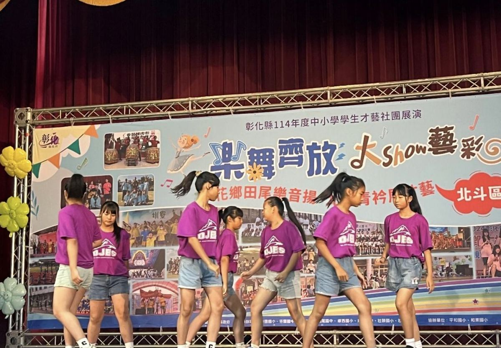
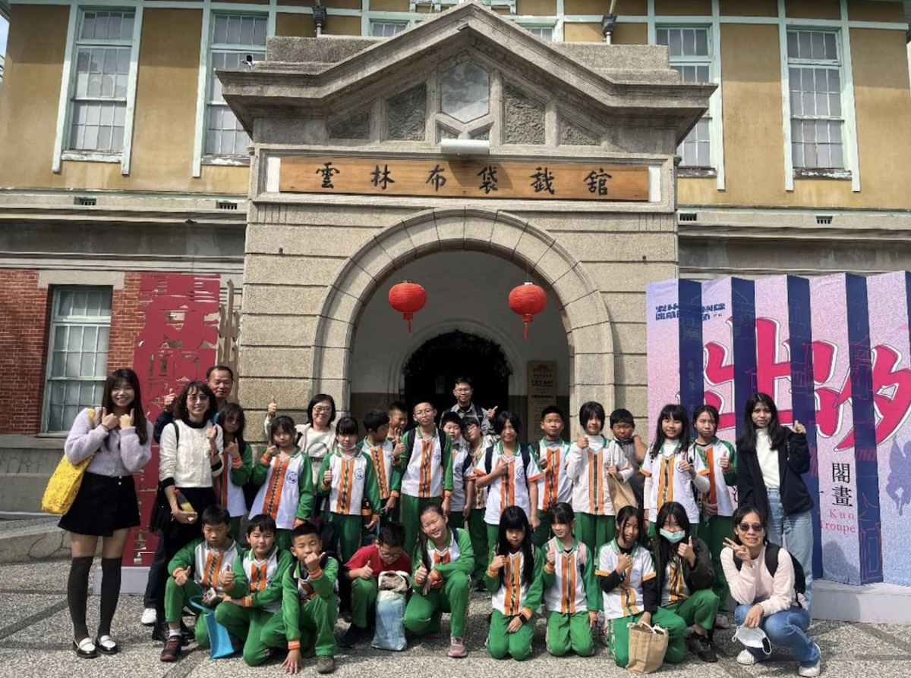
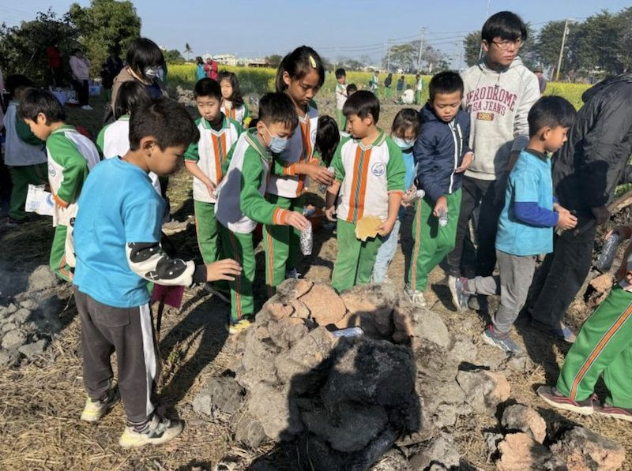
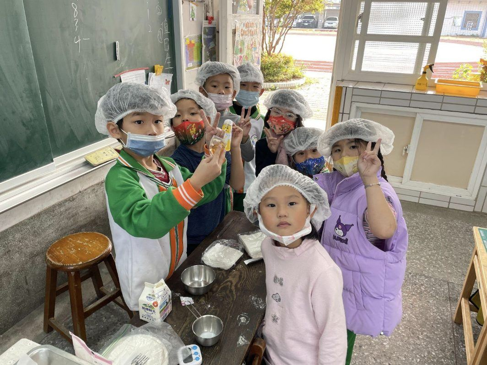

Scene 01
Talent Show
才藝表演
Look! These girls from Dajuang Elementary School are dancing on stage. They practiced a lot to show their awesome moves at the talent show.
看！這些大莊國小的女生正在舞台上跳舞。她們練習了很久，才能在才藝表演中展現出很棒的舞步。

Look! These girls from Dajuang Elementary School are dancing on stage. They practiced a lot to show their awesome moves at the talent show.
看！這些大莊國小的女生正在舞台上跳舞。她們練習了很久，才能在才藝表演中展現出很棒的舞步。

Look at all these kids! They visited the Yunlin Glove Puppet Museum during their winter break. They learned so much and even watched a wonderful puppet show.
看！這些孩子們！她們利用寒假參觀了雲林布袋戲館。她們學到了好多東西，還看了一場很棒的布袋戲表演。
Look at these happy kids! They are from the GreenMech Maker Brick Club at Dajuang Elementary School. They built cool spinning tops and are having so much fun playing with them.
看！這些快樂的孩子們！她們是大莊國小機關王創客積木社團的。她們製作了很酷的旋風陀螺，玩得非常開心。
Look at these smart kids! They were in a special reading camp during their winter break. They read books and also used tablets to discover new stories.
看！這些聰明的孩子們！她們參加了寒假特別的閱讀營隊。她們閱讀紙本書，也使用平板電腦來發現新的故事。

Look at these kids having fun at the outdoor kiln day! They are making their own small kilns to bake sweet potatoes, eggs, and chicken. They worked hard to gather dirt and build the kilns.
看這些孩子們在戶外烘窯日玩得真開心！她們正在製作自己的小土窯來烤地瓜、蛋和雞肉。她們努力地收集泥土並堆疊土窯。
Students from Dajuang Elementary School went on a fun field trip to Sun Moon Lake in Nantou. They wore yellow boots and stood on "bouncing mud" at Toushe Living Basin.
大莊國小的學生們去南投日月潭進行了一次有趣的校外教學。她們穿著黃色雨鞋，站在頭社活盆地的「會跳的泥土」上。
Students from Dajuang Elementary School had so much fun on a boat ride around Sun Moon Lake! This was their first time on a boat there. They sang songs and enjoyed the beautiful views.
大莊國小的學生們在日月潭搭船環湖玩得好開心！這是她們第一次在那裡搭船。她們在船上唱歌，欣賞美麗的風景。
Today, students from Dajuang Elementary School visited a special center. They learned how to make beautiful miniature potted plants! A teacher taught them how to put soil in pots, trim little branches, and add small rocks.
今天，大莊國小的學生們參觀了一個特別的中心。她們學習如何製作美麗的迷你盆栽！一位老師教導她們如何在盆栽裡放土、修剪小樹枝，並添加小石頭。

One afternoon, Dajuang Elementary School students became little bakers! Their teacher taught them how to make delicious waffles for an afternoon snack. Look at them, all wearing special hats and ready to bake!
某天下午，大莊國小的學生們都變成了小小烘焙師！她們的老師教導她們如何製作美味的鬆餅當作下午點心。看看她們，都戴著特別的帽子，準備好要烘焙了！